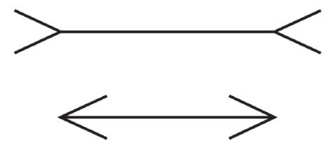

真的如此出类拔萃？
黑天鹅事件也可以预测
从运作预测比赛开始，也就是从罗纳德•里根时期和20世纪80年代苏联红军历次阅兵开始，直到今天，我一直会和丹尼尔•卡尼曼交流，谈论我的工作。因为这个习惯，我始终非常幸运。卡尼曼无心插柳成了诺贝尔奖得主，他是认知心理学家，虽然从未受过经济学教育，但是他的研究成果撼动了该领域的基础。他也是极其善谈之人，可以从随意说笑自然地切换到对说笑内容的深刻剖析。与卡尼曼交谈可以说是一种苏格拉底式的体验，只要你自己不怀有戒心，就会被他的活力所感染。2014年夏，超级预测家不仅仅是凭借超级运气才取得如此成就的事实已经很明显，卡尼曼则直言不讳地问我：“你认为他们是自身与众不同，还是做事与众不同？”
我的答案是：“二者都有点。”诚然，他们在智力和思维开放性方面确实比普通人得分更高，尽管也没有高到创纪录。但是导致他们如此出色的因素中，自身因素的影响还是少一些，更多的影响来自他们所做的事，例如，辛勤研究，认真思考，自我批评，吸收和融合其他人视角，非常细化的判断，以及永不停息地更新预测。
不过，他们能坚持多久？我们看到，理论上人们可以运用第二系统的自觉思考来挑出第一系统无意识的快速反应所造成的错误。超级预测家在这方面付出了巨大努力。可是，持续的自我审查令人筋疲力尽，而知道答案的感觉又是那么美妙。所以，毫无疑问，即使我们当中最出色的人也会不可避免地倒退到更加容易的直觉思维模式中。
2014年，我们采访了迈克尔•弗林将军，他曾经是美国国防部情报局局长，这个机构是五角大楼设立的与中央情报局对等的单位，有17000名职员。迈克尔从局长一职退休后不久总结了自己的世界观。“每天早晨我来到这间办公室，先慢跑一小段，让头脑清醒起来，然后用2~3小时阅读情报报告。”他说，“坦率地说，每天我看到的是我整个职业生涯中所见到的最不确定的、最混乱的、最令人困惑的国际环境。过去有些时候也许更危险，例如纳粹和日本帝国主义者试图统治世界的时期，但是我们正处于另一个非常危险的时代……我认为，这是一个以史无前例的长期社会冲突为特征的时代。”1
弗林的许多话含义太过模糊，难以判断，但是他最后的一段话语意明确。采访过程中，记者先提到了乌克兰、朝鲜和中东的冲突，在这样的语境下，弗林的论述表明他相信“社会冲突”达到了“史无前例”的水平。这是经验之谈，可以通过翻阅大量关于“二战”以来全球暴力冲突数量的报道来验证。基本上，这些报道都显示出国家间战争从20世纪50年代以来持续减少，内战从90年代初冷战结束后也持续减少。这体现在每年战争死亡人数上，而这个指标，除了少数几年有过反弹外，其余时间一直在下降。2
不一定要成为国防部情报局的首脑才能找到这些报告，在谷歌上搜索“全球冲突趋势”就可以了。但是在得出全面结论并告知他人之前，弗林认为完全没有必要向谷歌求助。为什么没有必要？弗林的理由与佩吉•努南的理由一样，后者在判断布什总统支持率上升的意义时也认为没有必要参考其他总统的支持率数据。这两个案例中产生作用的是卡尼曼所说的“所见即是全部”，这是所有认知错觉之母，是一种以自我为中心的世界观，它使我们局限在鼻尖视角所能看到的世界里，看不到外面的世界。弗林每天看到办公桌上堆积如山的坏消息，他的结论看来确实正确，这就是他看到的整个世界。作为一位终身从事情报工作的官员，弗林明白对假设进行检验的重要性，不论假设看起来多么正确，都要接受检验。但是他没有检验自己观点的正确性，因为这些观点看上去不像假设，让人感觉是在陈述事实。这是心理学书籍中最古老的小伎俩，但是弗林却被蒙骗住了。
我不是在贬低迈克尔•弗林。恰恰相反，有如此成就的人犯了如此明显的错误，这一事实让这个错误更加醒目。我们都有脆弱的时刻。我们做不到刀枪不入。缪勒–莱尔（Müller-Lyer）的错觉图片说明了这一点。

上面的水平线看起来比下面的线长，实际上不是。如果你不确定，拿出尺子来量量。当你完全确定两线长度相同后，再看一次，但这一次试着准确地目测两条线的长度。运气不佳？你知道两线长度相同，希望能通过肉眼看出来。可是，你做不到。甚至于知道这是错觉，你也无法纠正它。鼻尖视角有时候产生的认知错觉同样无法纠正。我们不可能关闭鼻尖视角，只能对大脑冒出的答案保持警惕。如果有时间，也有认知能力，可以用尺子量量。
按照这个观点，超级预测家总是仅仅因为第二系统的一个小差错就导致预测失败、排名暴跌。卡尼曼和我对此表示赞同。不过，我更加乐观，因为这些聪明的、专注的人可以给自己打预防针，在一定程度上防止出现某种认知错觉。这听起来也许会在学术界掀起轩然大波，但是它是有现实意义的。如果我说对了，各类组织通过招聘和培训能够拒绝偏见的人才，可以获得更多收益。
尽管卡尼曼正式退休很长时间了，他仍然会尝试对抗性合作，作为一名科学家，他执着于从持有不同观点的人身上寻找共同点。就在卡尼曼与加里•克莱因合作解决两人关于专家直觉理论的分歧时，他又与芭芭拉•梅勒斯一道，研究超级预测家如何抵御某种对预测至关重要的偏见的影响，这种偏见就是“视野迟钝”（scope insensitivity）。
卡尼曼在30年前首次论述了视野迟钝现象，当时他向加拿大安大略省首府多伦多的一个随机选出的团队提问：他们愿意支付多少钱来清理该省一小块区域内的湖泊。平均值是10美元。3 卡尼曼又问另一个也是随机选出的团队，他们愿意支付多少钱来清理安大略省境内全部25万个湖泊。他们的答案同样约为平均10美元。随后的研究结果相似。在一项研究中，参与者被告知每年2000只候鸟在被油污染的水池中溺毙，那么，他们愿意花费多大代价来制止这种现象的发生？另一组研究对象被告知溺毙的候鸟数量为20000只。在第三组中，这个数字为20万。可是，无论是哪一组，研究对象愿意支付的平均金额都在80美元左右。卡尼曼后来写道，人们在回答这个问题时脑海里浮现的是一幅具有代表性的画面：被污染的湖或者浸泡在油污中的将要溺毙的鸭子。“代表性的画面自动激发出某种情感反应，情感的强度会映射到金额上。”这是典型的诱惑与转换思维。人们没有回答被问到的问题，那是一道难题，需要我们给从未用金钱衡量过的事物标上金钱价值。他们回答的是“这会让我感觉糟糕吗？”无论问题提到的是2000还是20万只濒临死亡的鸭子，答案基本上只有一个：很糟糕。他们闭上眼睛，眼不见，心不烦。
被污染的湖泊与叙利亚内战以及情报高级研究计划局的比赛提出的任何地缘政治问题有何关联？如果你像丹尼尔•卡尼曼一样具有创造性，你的答案将是：“联系紧密。”
让我们闪回到2012年年初。阿萨德政权倒台的可能性有多大？反方的论据包括：该政权拥有武器精良的铁杆支持者和强大的区域性盟友。正方的论据包括：（1）叙利亚政府军出现大规模叛变；（2）叛军势头不弱，战斗在首都附近爆发。假设你要评估这些论据的可信度。看起来它们的可信度基本相等，所以你设定的概率约为50%。
注意到你忽视了什么吗？时间框架。这显然很重要。举个极端的例子，阿萨德政权在未来24小时倒台的可能性一定小于—也许远远小于—未来24个月倒台的可能性。用卡尼曼的话来说，时间框架就是预测的“视野”。
我们向一组随机选出的超级预测家提问：“阿萨德政权在未来3个月内倒台的可能性有多大？”另一组则被要求回答6个月内倒台的可能性有多大。我们对普通预测者做了同样的实验。
卡尼曼断言“视野迟钝”广泛存在。人们会在无意识的情况下陷入诱惑与转换的陷阱中，回避需要根据时间框架来调整概率的难题，转而处理关于正反两方论据的相对权重的简单问题。在这样的陷阱中，时间框架对最终答案没有影响，正如死亡的候鸟数量是2000、20000还是20万，对答案无关紧要。梅勒斯开展若干次研究后发现，恰如卡尼曼预料的那样，绝大多数预测者都有视野迟钝。普通预测者认为3个月内阿萨德下台的概率是40%，6个月的概率是41%，基本相同。
而超级预测家的研究结果就要强很多。他们认为，3个月内阿萨德政权垮台的概率是15%，6个月的概率为24%。这不是完美的视野敏感（这个概念不好定义），但是它已经足够出色了，卡尼曼也会感到惊讶的。考虑到过去从未有人同时回答过这个问题的3个月和6个月版本，可以说超级预测家的结果相当出色。这意味着超级预测家不仅注意到问题中的时间框架，而且还会想到其他可能存在的时间框架，因此不会受到难以避免的偏见的影响。
我想，超级预测家的出色表现也有我的功劳。我们提供先进的培训指南，敦促预测者以发散思维来思考“所问到的问题”，并要求他们讨论，当他们面对有时间限制的问题时，如果问题的截止期限是6个月，而不是12个月，或者目标油价比预期低10%，或者出现其他重要变动，那么，他们的答案会发生什么变化。针对个人思维舒适区的压力测试有多种方法，在大脑中进行这样的“思维实验”是一种不错的方法，它可以确保你具有开阔的视野。然而，事实是，在我们开始研究视野迟钝之前，超级预测家就已经在谈论这类问题了，尽管他们没有使用这个术语。他们的想法对我们丰富培训指南很有帮助，就如同我们的指南也有助于对他们拓展思维。
我的观点是，某些超级预测家如此擅长通过第二系统来纠正思想，例如冷静下来从外部视角看待问题，以至于这些技巧已经成为习惯。事实上，它们现在已是第一系统的一部分。这听起来也许有些奇怪，但它并非不可思议的过程。高尔夫球员可以回忆起第一次站在开球处的情景。有人告诉他弯曲膝盖，头部微微倾斜，一侧肩膀抬起，另一侧肩膀下压，抬起肘部……他接受的是令人不适的强制性的主动指挥。第二次站在开球处，他必须仔细回忆所有动作要领（“屈膝，歪头，抬高肩膀”）。有时即使非常努力地回想，他也难免遗漏某些要领，还要回过头去纠正。第三次同样如此。不过，渐渐地，他越打越熟练。持续练习的高尔夫球员最终将会把这些动作指导植入第一系统，使他打起球来动作潇洒。一项任务，例如烹饪、航海、外科手术、唱歌剧、驾驶喷气式战斗机，无论对体力和认知能力的要求有多么高，通过积极主动的练习，都可以转变为我们的第二天性。见过儿童努力念出单词、艰难地理解句子意思的情景吗？你也曾经做过这样的事。幸运的是，你现在读这个句子，完全没有那么困难。
那么，超级预测家抗拒心理学定律的强大影响力可以坚持多长时间？答案取决于他们的认知负荷有多重。将第二系统有意识的修正转换为第一系统无意识的操作也许会大幅减少认知负荷。某些超级预测家开发的软件工具可能就具有这样的功能，例如道格•洛奇设计了纠正第一系统产生的偏见的新资源选择程序，用于帮助有着相似思维的人。
不过，即使有这样的工具，超级预测仍然是高难度的工作。擅长此道的人知道他们的成功并不稳固，失败随时会到来。但是，当失败真的到来时，他们会重整旗鼓，努力吸取正确的经验，继续预测。
不过，我的一位朋友兼同事对超级预测家的印象不像我那样深刻。事实上，他质疑整个研究项目已走入歧途。